Theory
This page explains how the three shearlet systems of the package are built and how they differ. The figures follow those of the papers the systems come from; they are computed from shearlet_spectra when the documentation is built.
Shearlets
A wavelet dilates one generator isotropically. A shearlet dilates it anisotropically and adds a shear, so its elements are needles whose orientation the shear sets. With the parabolic scaling and shear matrices
\[A_a = \begin{pmatrix} a & 0 \\ 0 & \sqrt a \end{pmatrix}, \qquad S_s = \begin{pmatrix} 1 & s \\ 0 & 1 \end{pmatrix},\]
the shearlets are $\psi_{a,s,t}(x) = a^{-3/4}\,\psi\big(A_a^{-1} S_s^{-1}(x - t)\big)$ for a scale $a > 0$, a shear $s \in \mathbb R$ and a translation $t \in \mathbb R^2$, and the shearlet transform of $f$ is $\mathcal{SH}f(a, s, t) = \langle f, \psi_{a,s,t}\rangle$. The classical shearlet is band-limited and separable in polar-like coordinates,
\[\hat\psi(\omega) = \hat\psi_1(\omega_1)\,\hat\psi_2\!\left(\frac{\omega_2}{\omega_1}\right),\]
with a wavelet $\hat\psi_1$ (supported away from the origin) and a bump $\hat\psi_2$ on $[-1, 1]$. Its dilates and shears cut the frequency plane into wedges whose angular width shrinks like $\sqrt a$: at fine scales the elements are long and thin, with width ≈ length², which is what lets a shearlet frame represent an image with smooth edges (a "cartoon") with optimally sparse coefficients. Wavelets cannot: their elements are isotropic.
Shears alone cannot reach the vertical axis ($s \to \infty$), so the cone-adapted systems used in practice treat the plane in pieces: a horizontal cone $|\omega_2| \le |\omega_1|$, a vertical cone with the roles of the axes swapped, the seam lines $|\omega_1| = |\omega_2|$ where the two meet, and a low-frequency square handled by a lowpass. In $d$ dimensions the cones are the $d$ pyramids around the axes, and a shearlet has a shear against each of the other $d - 1$ axes.
Conventions
All three systems of this package compute a translation-invariant discrete transform: every subband is a periodic convolution of the input with one filter, so it keeps the size of the input and commutes with circular shifts. On the DFT grid each filter is a real, point-symmetric mask, and the transform is one FFT, then a masked product and an inverse FFT per subband, computed by the mask-bank engine of MultiscaleFilterBanks.jl (How the engine computes). The systems differ in how the masks are built and what frame they form.
subband_layout(system, size(x)) lists the subbands in the order the coefficients stack them. A ShearletIndex has a scale (0 for the lowpass, then coarse to fine), a cone (the axis the subband's frequencies are largest along) and a shear per remaining axis. All systems share the shear convention: subband (cone c, shear k) at a scale with $s$ shears per side collects the frequencies with $\omega_e / \omega_c \approx -k_e / s$.
The left panel colors every frequency of a two-scale band-limited system by the region it belongs to; the right one by the subband with the largest response there, labeled with its position in subband_layout (compare Häuser & Steidl, Figs. 5 and 11):
sys = BandlimitedShearlets(scales = 2)
L = subband_layout(sys, (128, 128))
region(l) = islowpass(l) ? 0 : abs(l.shear[1]) == 2^(l.scale - 1) ? 3 : l.cone
own = owner_map(sys, 128)
regions = map(i -> region(L[i]), own)
p1 = heatmap(regions; color = cgrad([:gray80, :steelblue, :darkorange, :seagreen]; categorical = true),
aspect_ratio = :equal, axis = false, colorbar = false, title = "lowpass, cones, seams",
annotations = [(100, 64, text("cone 1", 9, :white)), (64, 110, text("cone 2", 9, :white)),
(108, 108, text("seam", 9, :white))])
p2 = tiling(sys, 128; title = "subbands, in layout order")
plot(p1, p2; layout = (1, 2), size = (760, 380))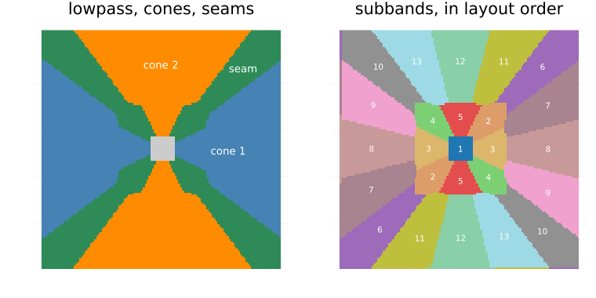
L[2:5] # scale 1: three shears of cone 1, then cone 2 (its seams glued to cone 1)4-element Vector{ShearletIndex{1}}:
ShearletIndex(scale = 1, cone = 1, shear = (-1,))
ShearletIndex(scale = 1, cone = 1, shear = (0,))
ShearletIndex(scale = 1, cone = 1, shear = (1,))
ShearletIndex(scale = 1, cone = 2, shear = (0,))Band-limited shearlets (FFST)
BandlimitedShearlets follows S. Häuser and G. Steidl's Fast Finite Shearlet Transform (FFST). Its windows are Meyer-type: with Meyer's auxiliary function $v$, a radial window $\hat\psi_1$ (their eq. 4) with $\sum_{j \ge 0} \hat\psi_1(4^{-j}\omega)^2 = 1$ away from the origin, an angular bump $\hat\psi_2$ (eq. 6) with $\sum_k \hat\psi_2(\omega + k)^2 = 1$, and a lowpass $\varphi$ that completes the radial sum. On a frequency scaled so that the Nyquist frequency is $2^{2J-1}$, the shearlet of scale $j$, cone $c$ and shear $k$ is
\[\hat\psi_{j,c,k}(\omega) = \hat\psi_1\!\left(4^{1-j}\lVert\omega\rVert_\infty\right) \prod_{e \ne c} \hat\psi_2\!\left(2^{j-1}\frac{\omega_e}{\omega_c} + k_e\right), \qquad |k_e| \le 2^{j-1},\]
on its cone $|\omega_e| \le |\omega_c|$. Scale $j$ has $s = 2^{j-1}$ shears per side of each cone, $4s$ shearlets in 2-D. Both families of windows are partitions of unity, which the figure shows along the two directions that matter: the radial windows of three scales and the lowpass along the $\omega_1$ axis, and the angular windows of the finest scale's horizontal cone along a vertical line through it (compare Häuser & Steidl, Fig. 3). The dashed line is the root sum of their squares:
n = 256
sys = BandlimitedShearlets(scales = 3)
L = subband_layout(sys, (n, n)); Ψ = shearlet_spectra(sys, (n, n))
unsheared = [findfirst(==(ShearletIndex{1}(j, 1, (0,))), L) for j in 1:3]
r = 2:(n ÷ 2) # ω₁ = 1, …, n/2 − 1 on ω₂ = 0
p1 = plot(r .- 1, Ψ[r, 1, 1]; label = "lowpass", lw = 2, xscale = :log2,
xlabel = "ω₁ (bins), ω₂ = 0", title = "radial windows", legend = :left)
for (j, i) in enumerate(unsheared)
plot!(p1, r .- 1, Ψ[r, 1, i]; label = "scale $j", lw = 2)
end
plot!(p1, r .- 1, sqrt.(Ψ[r, 1, 1] .^ 2 .+ sum(Ψ[r, 1, i] .^ 2 for i in unsheared));
label = "root sum of squares", ls = :dash, color = :black)
ω₁ = 96; ω₂ = -ω₁:ω₁
cone1 = [i for (i, l) in enumerate(L) if l.scale == 3 && l.cone == 1]
p2 = plot(; xlabel = "ω₂ / ω₁ on ω₁ = $ω₁", title = "shears of scale 3, cone 1", legend = false)
for i in cone1
plot!(p2, ω₂ ./ ω₁, Ψ[ω₁ + 1, mod.(ω₂, n) .+ 1, i]; lw = 1.5)
end
plot!(p2, ω₂ ./ ω₁, sqrt.(sum(Ψ[ω₁ + 1, mod.(ω₂, n) .+ 1, i] .^ 2 for i in cone1));
ls = :dash, color = :black)
plot(p1, p2; layout = (1, 2), size = (900, 300), left_margin = 3Plots.mm, bottom_margin = 5Plots.mm)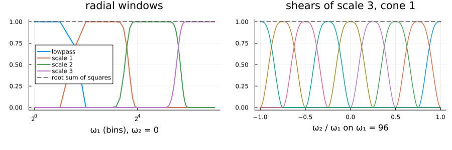
One shearlet in frequency and in space (compare Häuser & Steidl, Fig. 4): a pair of opposite wedges in frequency, a needle across them in space, oscillating along the wedge's direction:
i = findfirst(==(ShearletIndex{1}(2, 1, (-1,))), L)
ψ = element(Ψ, i, 20)
pa = plot_freq(Ψ, i; title = "ψ̂ (scale 2, shear −1)", xlabel = "ω₁", ylabel = "ω₂")
pb = plot_space(ψ; title = "ψ in space", xlabel = "x₁", ylabel = "x₂")
cl = maximum(abs, ψ)
pc = surface(-20:20, -20:20, ψ; color = :RdBu, clims = (-cl, cl), colorbar = false,
title = "ψ in space, 3-D view", camera = (30, 50), zticks = false)
plot(pa, pb, pc; layout = (1, 3), size = (950, 320), bottom_margin = 4Plots.mm, left_margin = 3Plots.mm)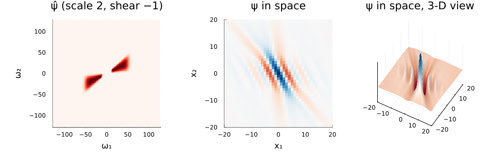
The shears $k = \pm s$ reach the seam lines, where a shearlet of the horizontal cone and one of the vertical cone have the same central direction. Häuser and Steidl glue each such pair into one seam shearlet $\hat\psi^{h \times v}$, which this package does too: in 2-D the subband of cone 1 with $|k| = s$ covers both halves, and cone 2 lists only $|k| < s$. With the seams glued, the squares of all masks sum to one on every frequency of the grid, so the system is a Parseval frame: the inverse is the adjoint, and $\sum_i \lVert c_i\rVert^2 = \lVert x\rVert^2$. Their Fig. 15 shows how close to one their sum is, and how exact the round trip; the same two numbers here:
tight = dropdims(sum(abs2, Ψ; dims = 3); dims = 3) .- 1
x = randn(n, n)
roundtrip = synthesize(sys, analyze(sys, x)) .- x
p1 = heatmap(bins(n), bins(n), centered(tight); color = :RdBu, clims = (-1, 1) .* 1e-14,
aspect_ratio = :equal, title = "Σ ψ̂² − 1", xlabel = "ω₁", ylabel = "ω₂")
p2 = heatmap(roundtrip; color = :RdBu, clims = (-1, 1) .* 1e-14, aspect_ratio = :equal,
axis = false, title = "inverse(forward(x)) − x")
plot(p1, p2; layout = (1, 2), size = (900, 360), right_margin = 6Plots.mm)
@printf("max |Σψ̂² − 1| = %.1e, max reconstruction error = %.1e\n", maximum(abs, tight), maximum(abs, roundtrip))max |Σψ̂² − 1| = 8.7e-15, max reconstruction error = 6.0e-15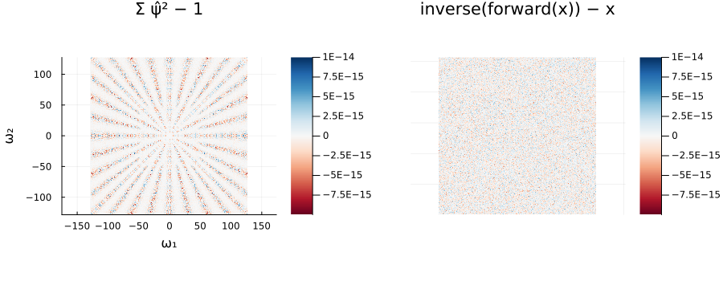
The number of subbands is $1 + \sum_{j=1}^{J} 4 \cdot 2^{j-1} = 2^{J+2} - 3$, the redundancy of the transform:
[(J, nsubbands(BandlimitedShearlets(scales = J), (512, 512))) for J in 1:4]4-element Vector{Tuple{Int64, Int64}}:
(1, 5)
(2, 13)
(3, 29)
(4, 61)Smooth seam elements
The radial window of the FFST is a function of $\lVert\omega\rVert_\infty$, whose level sets have corners on the seam lines, so a glued seam shearlet is continuous there but not smooth, and its continuous counterpart decays slowly in space. K. Guo and D. Labate build the radial windows from a tensor-product lowpass $\Phi(\omega) = \varphi(\omega_1)\varphi(\omega_2)$ instead, $W_j(\omega) = \sqrt{\Phi(4^{-j}\omega)^2 - \Phi(4^{1-j}\omega)^2}$, which makes the seam elements smooth while keeping the Parseval property; Häuser & Steidl §3.3 adopt it as their "new" construction. smooth = true selects it. Their Figs. 7 and 9 compare a seam shearlet of both constructions:
n = 128
ps = []
for smooth in (false, true)
s = BandlimitedShearlets(scales = 3; smooth)
Ψs = shearlet_spectra(s, (n, n))
seam = findfirst(==(ShearletIndex{1}(2, 1, (2,))), subband_layout(s, (n, n)))
name = smooth ? "smooth" : "Meyer"
ψs = element(Ψs, seam, n ÷ 2 - 1)
push!(ps, plot_freq(Ψs, seam; title = "$name seam shearlet, ψ̂"))
push!(ps, heatmap(-(n ÷ 2 - 1):(n ÷ 2 - 1), -(n ÷ 2 - 1):(n ÷ 2 - 1), log10.(abs.(ψs) ./ maximum(abs, ψs) .+ 1e-12);
color = :viridis, clims = (-6, 0), aspect_ratio = :equal, title = "$name, log₁₀ |ψ| in space"))
far = [max(abs(a), abs(b)) > 16 for a in -(n ÷ 2 - 1):(n ÷ 2 - 1), b in -(n ÷ 2 - 1):(n ÷ 2 - 1)]
@printf("%-6s energy beyond 16 samples from the center: %.1e\n", name, sum(abs2, ψs[far]) / sum(abs2, ψs))
end
plot(ps[[1, 3, 2, 4]]...; layout = (2, 2), size = (760, 700))Meyer energy beyond 16 samples from the center: 1.2e-02
smooth energy beyond 16 samples from the center: 1.2e-02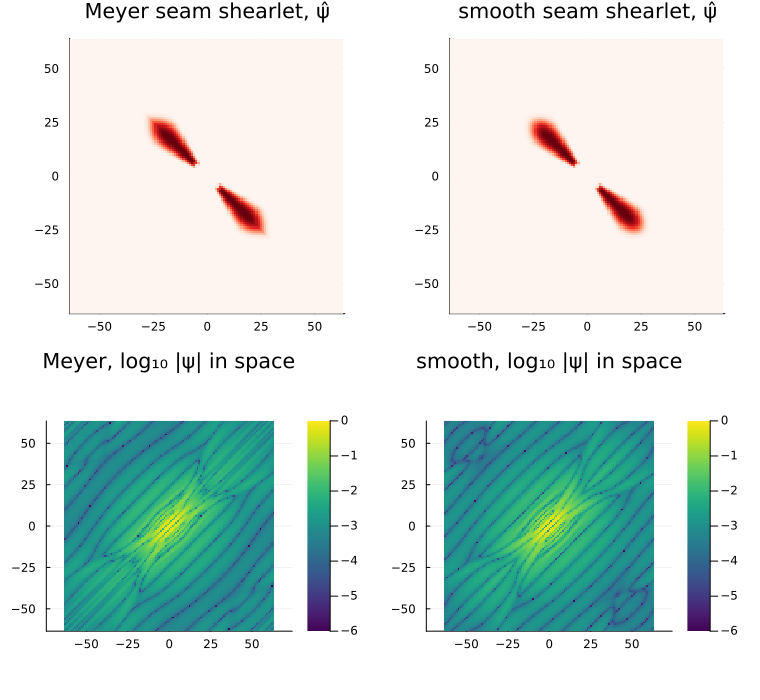
In frequency the smooth seam element has rounded ends instead of the Meyer element's corners. Smoothness is a statement about the continuous functions, though: sampled on a grid of this size, both elements leave about the same share of their energy far from the center (the printed numbers). The smooth variant's lowpass is a square rather than cone-aligned.
α-shearlets
Parabolic scaling (width ≈ length²) is one point of a family. F. Voigtlaender and A. Pein's α-shearlets scale the width as $\text{length}^\alpha$, which on the FFST grid means $s_j = 2^{(2-\alpha)(j-1)}$ shears per side at scale $j$. $\alpha = 1$ is the shearlet case, $\alpha = 2$ keeps one shear per side at every scale (a wavelet-like, isotropic tiling) and $\alpha \to 0$ approaches ridgelets, whose number of directions quadruples with every scale. The cones are colored blue (cone 1) and orange (cone 2), the lowpass gray, and the boundaries between subbands are drawn in black. The glued seam subbands are listed under cone 1, so they are blue:
plot([(sa = BandlimitedShearlets(scales = 3; alpha);
cone_map(owner_map(sa, 256), subband_layout(sa, (256, 256));
title = "α = $alpha ($(nsubbands(sa, (256, 256))) subbands)"))
for alpha in (2, 1, 0)]...; layout = (1, 3), size = (900, 310))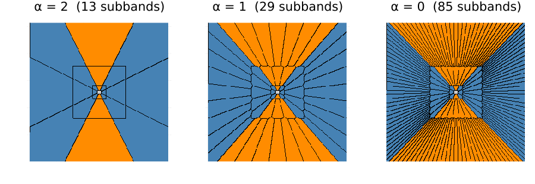
Three dimensions
On a volume the cones are the three pyramids $|\omega_e| \le |\omega_c|,\ e \ne c$ around the axes, and a shearlet of cone $c$ has a shear $(k_1, k_2)$ against each of the other two axes, the product of two angular bumps. Seam elements are glued wherever pyramids meet: along a face of two pyramids, and on the edges $|\omega_1| = |\omega_2| = |\omega_3|$ where all three meet. Each subband is then one central direction $v$ with $\lVert v\rVert_\infty = s$ counted once up to sign, so scale $j$ has $\big((2s+1)^3 - (2s-1)^3\big)/2$ subbands, and the system is again a Parseval frame. Two slices of the frequency cube show the tiling, colored by pyramid (blue, orange and green for axes 1, 2 and 3) with the subband boundaries in black. The slice $\omega_3 = 0$ through the origin shows the 2-D tiling again. The slice $\omega_3 = 20$ cuts through pyramid 3, where the subbands form a grid of shears $(k_1, k_2)$, surrounded by the other two pyramids. A seam subband glued across pyramids takes the color of the lowest pyramid it belongs to:
n3 = 64
sys3 = BandlimitedShearlets(scales = 2)
L3 = subband_layout(sys3, (n3, n3, n3))
Ψ3 = shearlet_spectra(sys3, (n3, n3, n3))
own3 = [argmax(view(Ψ3, i, j, k, :)) for i in 1:n3, j in 1:n3, k in 1:n3]
plot(cone_map(centered(own3[:, :, 1]), L3; title = "ω₃ = 0"),
cone_map(centered(own3[:, :, 21]), L3; title = "ω₃ = 20");
layout = (1, 2), size = (760, 380))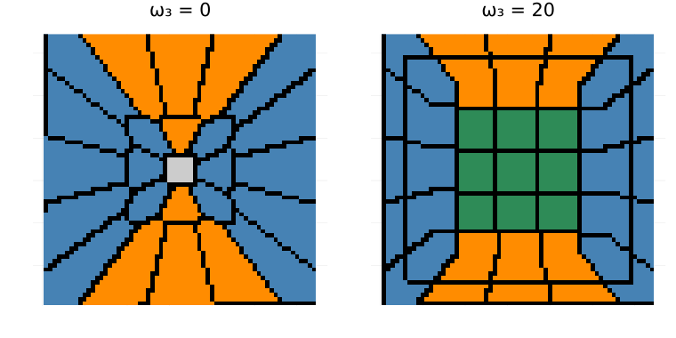
[count(l -> l.scale == j, subband_layout(BandlimitedShearlets(scales = 3), (64, 64, 64))) for j in 1:3]3-element Vector{Int64}:
13
49
193Nonsubsampled shearlet transform (NSST)
NSSTShearlets is the discrete shearlet transform of G. Easley, D. Labate and W.-Q. Lim, in its nonsubsampled form. It separates the two jobs a shearlet does: a nonsubsampled Laplacian pyramid splits the image into bandpass levels, and on every level a set of shearing filters cuts the bandpass into directional pieces (their Fig. 2):
x ─┬─ bandpass level J (finest) ─┬─ shearing filter w_{J,1} ─→ subband
│ ├─ …
│ └─ shearing filter w_{J,2^dJ} ─→ subband
├─ bandpass level J−1 ─── shearing filters ─→ 2^d(J−1) subbands
│ …
└─ lowpass ─→ subband 1The pyramid is MultiscaleFilterBanks' à trous pyramid with the CDF97 pair, the one the nonsubsampled contourlet transform uses; MultiscaleFilterBanks.jl explains the filter pair and the nonsubsampled pyramid. On the DFT grid level $j$ is $B_j = \big(\prod_{i<j} H_i\big)(1 - G_j H_j)$ with the upsampled lowpass filters $H_i, G_i$, and $\sum_j S_j B_j = 1$ for the synthesis products $S_j = \prod_{i<j} G_i$.
The shearing filters are where the shearlet geometry enters. Easley et al. construct a window $W$ on the pseudo-polar slope, the shearlet's angular window, sample it on an $L \times L$ grid, and take it back to space, where it is an $L \times L$ filter $w_{j,\ell}$ (their Fig. 7 shows two windows). The windows of a level sum to one, so the directional subbands of a level add up to its bandpass and the inverse needs no dual filters: it sums them and inverts the pyramid. Here the window is the squared angular bump of the band-limited system, so the NSST has the same directions and subband order as the FFST: a level with $2^d$ directions has $2^{d-2}$ shears per side of each cone.
The frequency responses of the subbands of one level are the products of the level's bandpass with each shearing filter. Below, for the default system (8, 8, 16 and 16 directions from coarse to fine), the half-maximum contour of $|\hat\psi_i|^2$ of every subband of the two coarse scales, colored by scale (the Which system figure shows all scales), and the radial profile of every pyramid level $B_j$, the sum of the level's directional subbands. Unlike the band-limited radial windows, the pyramid levels overlap and do not peak at one:
n = 256
sysn = NSSTShearlets()
Ln = subband_layout(sysn, (n, n)); Ψn = shearlet_spectra(sysn, (n, n))
p2 = covering(sysn, n; title = "scales 1 and 2", xlims = (-40, 40), ylims = (-40, 40))
r = 1:(n ÷ 2)
p3 = plot(; xlabel = "ω₁ (bins), ω₂ = 0", title = "pyramid levels", xscale = :log2, legend = :topleft)
plot!(p3, r, Ψn[r, 1, 1]; label = "lowpass", lw = 2)
for j in 1:length(sysn.direction_levels)
plot!(p3, r, vec(sum(Ψn[r, 1, [i for (i, l) in enumerate(Ln) if l.scale == j]]; dims = 2));
label = "level $j", lw = 2)
end
plot(p2, p3; layout = (1, 2), size = (700, 330), bottom_margin = 5Plots.mm)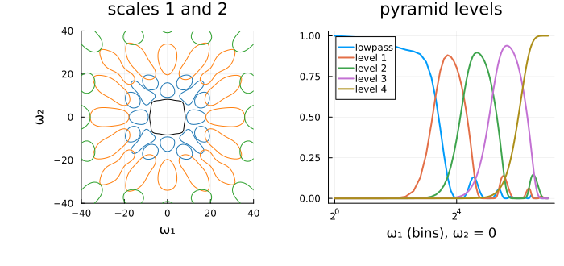
The filter size $L$ trades directional resolution near the origin against spatial locality. A coarse level sits close to $\omega = 0$, where an $L \times L$ filter cannot separate directions finely, so the default uses $L = 32$ there and $L = 16$ on the two finest levels. filter_size = 0 samples the windows on the image's own grid instead (the paper's frequency-domain variant), which is as sharp as the grid allows but not spatially compact. The magnitude response of one subband of the coarsest level, for three choices:
ps = []
for fs in (8, 32, 0)
s = NSSTShearlets(filter_size = fs)
Ψs = shearlet_spectra(s, (n, n))
sub = findfirst(==(ShearletIndex{1}(1, 1, (-1,))), subband_layout(s, (n, n)))
push!(ps, heatmap(bins(n), bins(n), centered(abs.(Ψs[:, :, sub])); color = :viridis,
aspect_ratio = :equal, colorbar = false, xlims = (-48, 48), ylims = (-48, 48),
title = fs == 0 ? "filter_size = 0 (DFT grid)" : "filter_size = $fs"))
end
plot(ps...; layout = (1, 3), size = (900, 300))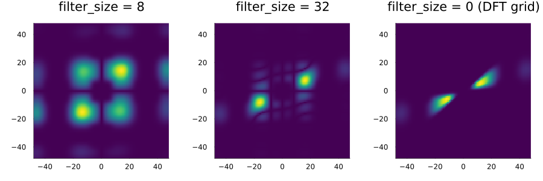
The NSST is a frame but not a tight one: the inverse is not the adjoint.
Compactly supported shearlets (ShearLab 3D)
CompactShearlets are the digital shearlets of G. Kutyniok, W.-Q. Lim and R. Reisenhofer's ShearLab 3D, with the nonseparable generator of W.-Q. Lim. Band-limited shearlets are perfectly localized in frequency and decay only polynomially in space; these are the opposite, finite filters in space, at the price of a frame that is not tight.
The generator is a product of three filters:
\[\hat\psi(\xi) = P\!\left(\tfrac{\xi_1}{2}, \xi_2\right)\hat\psi_1(\xi_1)\,\hat\varphi_1(\xi_2),\]
a 1-D wavelet $\psi_1$ across the cone, a 1-D scaling function $\varphi_1$ along it, both from a quadrature mirror filter pair, and a 2-D fan filter $P$ that cuts the separable product down to a wedge. Digitally (ShearLab 3D, Definition 3.2) the filter of scale $\ell$ with shear level $d$ is $p_\ell * (g_{J+1-\ell} \otimes h_{J+1-\ell+d})$ with the à trous wavelet and lowpass filters $g_j, h_j$ of the pair and $p_\ell$ the fan filter upsampled to match. The shear $S_{k/2^d}$ does not map the integer grid to itself, so it is applied faithfully: on a grid refined $2^d$ times across the cone, by upsampling, interpolating with $h_d$, remapping indices by the integer shear, filtering again and downsampling (their eqs. 21–22). Shears $k = -2^d, \dots, 2^d$ in each cone give $2(2^{d+1} + 1)$ subbands per scale; the default $d_\ell = \lceil \ell/2 \rceil$ is parabolic scaling.
The quadrature mirror filter is ShearLab's 9-tap maximally flat lowpass, and the fan filter is the maximally flat fan filter of order 4 of A. L. da Cunha, J. Zhou and M. N. Do. The filters and their responses (compare ShearLab 3D, Fig. 9):
sysc = CompactShearlets()
h = sysc.qmf
p1 = bar(-4:4, h; legend = false, title = "QMF lowpass taps", xlabel = "n")
ω = range(0, π; length = 300)
H = [abs(sum(h[k] * cis(-w * (k - 5)) for k in eachindex(h))) for w in ω]
p2 = plot(ω, H; legend = false, lw = 2, title = "|H(ω)|", xlabel = "ω",
xticks = ([0, π / 2, π], ["0", "π/2", "π"]))
nf = 128
P = zeros(nf, nf); P[1:9, 1:9] .= sysc.fan
P = circshift(P, (-4, -4)) # the fan's center tap at the origin
p3 = heatmap(range(-π, π; length = nf), range(-π, π; length = nf), centered(abs.(fft(P)));
color = :viridis, aspect_ratio = :equal, colorbar = false, title = "fan filter |P(ω)|",
xlabel = "ω₁", ylabel = "ω₂")
plot(p1, p2, p3; layout = (1, 3), size = (950, 300), bottom_margin = 5Plots.mm, left_margin = 3Plots.mm)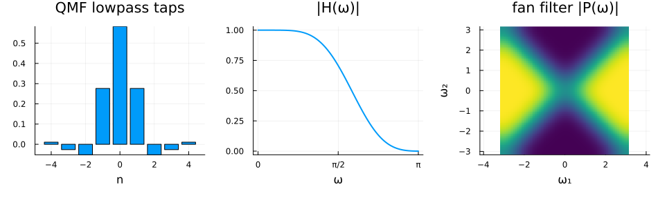
Shearlets of the finest scale in space and in frequency, unsheared and sheared (compare ShearLab 3D, Fig. 3, and Lim, Fig. 1). In space they are compactly supported needles; in frequency their essential support is a wedge, with the side lobes that finite filters leave:
n = 256
Lc = subband_layout(sysc, (n, n)); Ψc = shearlet_spectra(sysc, (n, n))
J = sysc.scales
picks = [ShearletIndex{1}(J, 1, (0,)), ShearletIndex{1}(J, 1, (-2,))]
ps = []
for idx in picks
sub = findfirst(==(idx), Lc)
push!(ps, plot_space(element(Ψc, sub, 12); title = "space, shear $(idx.shear[1])", color = :grays))
end
for idx in picks
sub = findfirst(==(idx), Lc)
push!(ps, plot_freq(Ψc, sub; color = :jet, title = "frequency, shear $(idx.shear[1])"))
end
plot(ps...; layout = (1, 4), size = (1000, 270))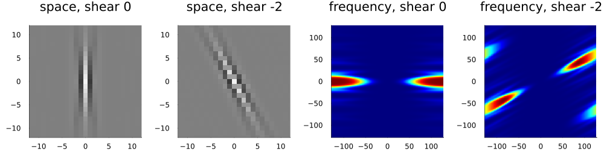
At $|k| = 2^d$ the shearlets of the two cones both point along a seam line, and they are almost the same filter (ShearLab 3D, Fig. 8). This package keeps both, so the seam directions are counted twice:
a = findfirst(==(ShearletIndex{1}(J, 1, (4,))), Lc)
b = findfirst(==(ShearletIndex{1}(J, 2, (4,))), Lc)
plot(plot_freq(Ψc, a; color = :jet, title = "cone 1, k = 4"),
plot_freq(Ψc, b; color = :jet, title = "cone 2, k = 4"); layout = (1, 2), size = (640, 320))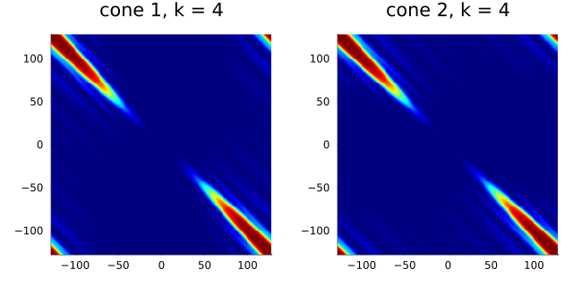
Since $\sum_i |\hat\psi_i|^2$ is not constant, the frame is not tight. Its bounds are the extremes of that sum over the grid, and the inverse uses the dual filters $\hat\psi_i / \sum_i |\hat\psi_i|^2$ (ShearLab 3D, eqs. 31–33). ShearLab 3D's Fig. 10 lists the bounds of its systems normalized to $B = 1$; for this package's systems with the same directions per scale:
function bounds(sys, dims)
Ψ = shearlet_spectra(sys, dims)
S = dropdims(sum(abs2, Ψ; dims = length(dims) + 1); dims = length(dims) + 1)
A, B = extrema(S)
return (subbands = size(Ψ, ndims(Ψ)), A = round(A / B; digits = 4), B = 1.0, B_over_A = round(B / A; digits = 2))
end
[
"SL2D1-like, d = (0,0,1,1)" => bounds(CompactShearlets(shear_levels = [0, 0, 1, 1]), (256, 256)),
"SL2D2-like, d = (1,1,2,2)" => bounds(CompactShearlets(), (256, 256)),
]2-element Vector{Pair{String, @NamedTuple{subbands::Int64, A::Float64, B::Float64, B_over_A::Float64}}}:
"SL2D1-like, d = (0,0,1,1)" => (subbands = 33, A = 0.0509, B = 1.0, B_over_A = 19.64)
"SL2D2-like, d = (1,1,2,2)" => (subbands = 57, A = 0.0334, B = 1.0, B_over_A = 29.97)The ratios are larger than ShearLab's 11.2 and 14.9: these systems keep both seam copies, use Definition 3.2's wedges at the coarse scales rather than the toolbox's, and a different fan filter. The dual-frame inverse is exact either way.
On 3-D data the cones are the three pyramids and a shearlet has a shear $(k_1, k_2)$ against each of the other two axes, $3(2^{d+1} + 1)^2$ subbands per scale (ShearLab 3D, Definitions 3.3–3.4).
Which system
BandlimitedShearlets | NSSTShearlets | CompactShearlets | |
|---|---|---|---|
| Frame | Parseval (inverse = adjoint) | not tight; the inverse sums each level and inverts the pyramid | not tight; dual-frame inverse |
| Localization | exact in frequency, slow decay in space | finite filters in space (except filter_size = 0) | finite filters in space |
| Dimensions | 2-D, 3-D | 2-D | 2-D, 3-D |
| Subbands at 4 scales (2-D, defaults) | 61 | 49 | 57 |
| Options | smooth, alpha | direction_levels, filter_size, pyramid | shear_levels, qmf, fan |
All three are translation invariant and keep the input size in every subband. Their frequency tilings at four scales, as the half-maximum contour of $|\hat\psi_i|^2$ of every subband, colored by scale (black: the lowpass). The band-limited windows meet exactly on the scale and cone boundaries; the NSST and compact responses are rounded and overlap their neighbors:
plot(covering(BandlimitedShearlets(scales = 4), 256; title = "BandlimitedShearlets(scales = 4)"),
covering(NSSTShearlets(), 256; title = "NSSTShearlets()"),
covering(CompactShearlets(), 256; title = "CompactShearlets()");
layout = (1, 3), size = (1050, 370), titlefontsize = 10, bottom_margin = 4Plots.mm)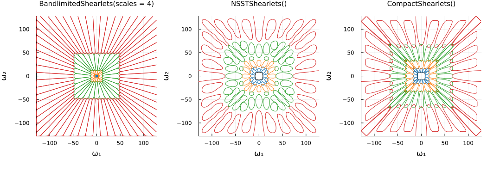
Related toolboxes
MATLAB implementations of these systems exist: the FFST toolbox of Häuser and Steidl, the NSST code of Easley, Labate and Lim, ShearLab 3D (MATLAB, with Python and Julia ports), and shearletSystem in MATLAB's Wavelet Toolbox, a band-limited system that keeps the seam elements of the two cones as separate subbands. None of them is a sample-for-sample reference for this package.
References
- S. Häuser and G. Steidl, "Fast finite shearlet transform: a tutorial," 2012, arXiv:1202.1773. The FFST, its windows, the glued seam shearlets and the smooth construction.
- K. Guo and D. Labate, "The construction of smooth Parseval frames of shearlets," Math. Model. Nat. Phenom., 8(1):82–105, 2013, doi:10.1051/mmnp/20138106. The smooth seam elements.
- F. Voigtlaender and A. Pein, "Analysis vs. synthesis sparsity for α-shearlets," 2017, arXiv:1702.03559.
- G. Easley, D. Labate and W.-Q. Lim, "Sparse directional image representations using the discrete shearlet transform," Appl. Comput. Harmon. Anal., 25(1):25–46, 2008, doi:10.1016/j.acha.2007.09.003. The NSST.
- G. Kutyniok, W.-Q. Lim and R. Reisenhofer, "ShearLab 3D: Faithful digital shearlet transforms based on compactly supported shearlets," ACM Trans. Math. Softw., 42(1):5, 2016, doi:10.1145/2740960. The compactly supported digital shearlets in 2-D and 3-D.
- W.-Q. Lim, "Nonseparable shearlet transform," IEEE Trans. Image Process., 22(5):2056–2065, 2013, doi:10.1109/TIP.2013.2244223. The nonseparable generator with a fan filter.
- A. L. da Cunha, J. Zhou and M. N. Do, "The nonsubsampled contourlet transform: theory, design, and applications," IEEE Trans. Image Process., 15(10):3089–3101, 2006, doi:10.1109/TIP.2006.877507. The maximally flat fan filters (Table II).
- P. S. Negi and D. Labate, "3-D discrete shearlet transform and video processing," IEEE Trans. Image Process., 21(6):2944–2954, 2012, doi:10.1109/TIP.2012.2183883. 3-D shearlets.